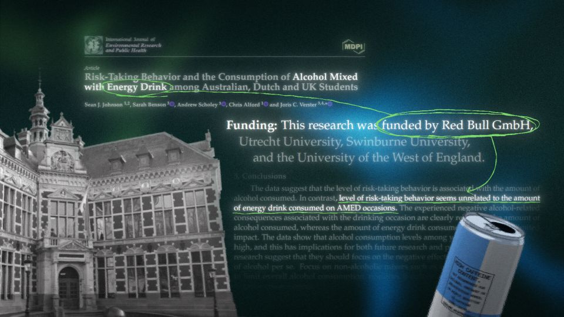
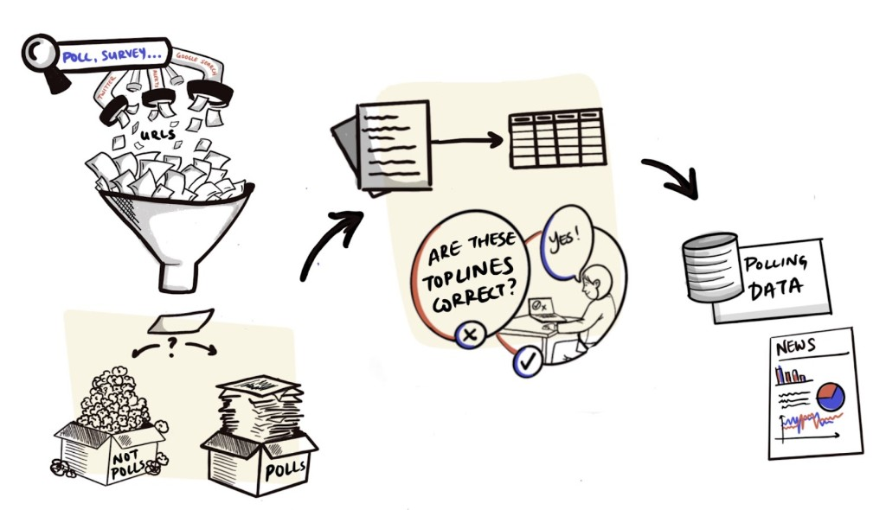

AI & the news
As more people get their news from AI platforms, decisions made by AI companies and the limits of the technology shape which publishers get seen and credited, and ultimately how people are informed. I design experiments to test how accurately these platforms cite reporting, how quickly they pick up breaking news, and what happens when they can’t access the journalism behind an answer. Most of this work is done in collaboration with Klaudia Jaźwińska.
See more
-
Your Chatbot’s Memory of You Can Shape the Information You See
AI companies promise that remembering users makes chatbots more helpful, but how do those memories shape the information people receive? I reported on research into how memory and personalization can reinforce users’ beliefs, shape answers, and leave people with less control over stored information than companies suggest.
-
AI Chatbots Can Search the Web—So Why Don’t They?
AI chatbots can search for current information, but they don’t always choose to. We examined how inconsistent decisions about when to search can produce confidently wrong answers about the news and why those failures demand accountability from platforms.
-
How AI Browsers Sneak Past Blockers and Paywalls
We tested how AI browsers access news articles that publishers try to restrict. Our reporting explains how agents can appear as ordinary browser sessions and read text hidden by some paywalls, complicating publishers’ efforts to control how their work is used.
Reporting & more
Sometimes the reporting calls for testing a language model or building a data pipeline. Sometimes it’s a regression. Sometimes it’s going outside and counting.

July 2026
How AI helped us uncover Red Bull’s influence on energy drink research
We used an LLM to map financial ties between energy drink companies and researchers for The Examination. We verified the extracted disclosures and built a network graph to help reporters find leads.

June 2025
‘Automating the Boring Stuff’ with Pollfinder.ai
At the Tow Center, I worked on PollFinder.ai, supported by the Brown Institute’s Magic Grant. We collaborated with polling researcher Mary Radcliffe, formerly at 538 and now at Fifty Plus One, to build LLM tools that find polls and organize their data for newsroom researchers.

July 2023
Balancing the Books
Ohio’s library funding system was designed to distribute resources more equitably across counties. I examined how that model changed as libraries increasingly turned to local levies, and what the shift meant for communities with different property-tax bases.

July 2022
From PHAT to DEADASS
Does the New York Times crossword’s idea of modern language actually keep up with the way people speak? I collected crossword clues from XWordInfo to find out.

August 2022
Fear and Luminescence on a New York Bike Trail
My morning bike ride along the Hudson Waterfront Greenway felt very different after dark. I documented one night-time commute to explore how lighting changed my experience of the route.